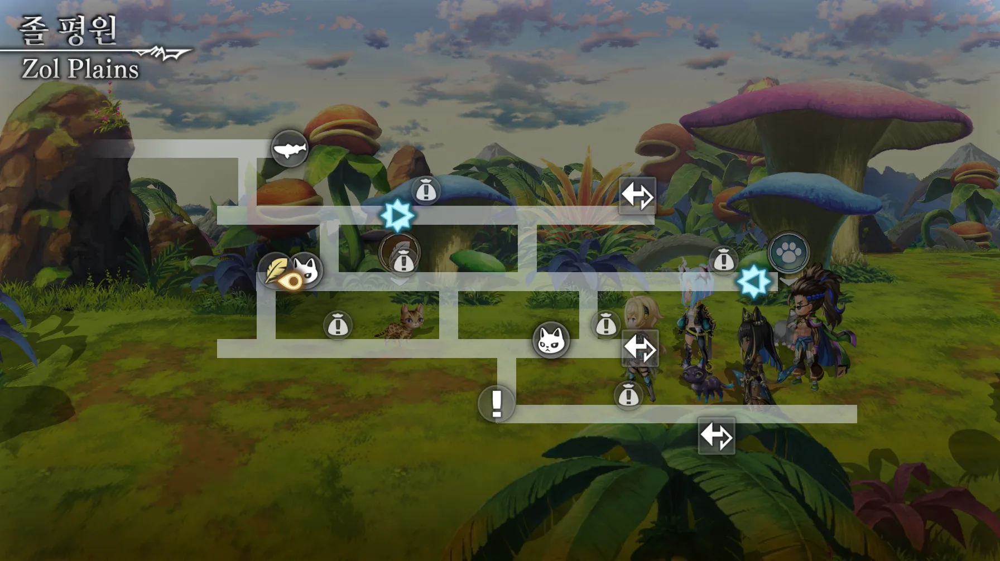
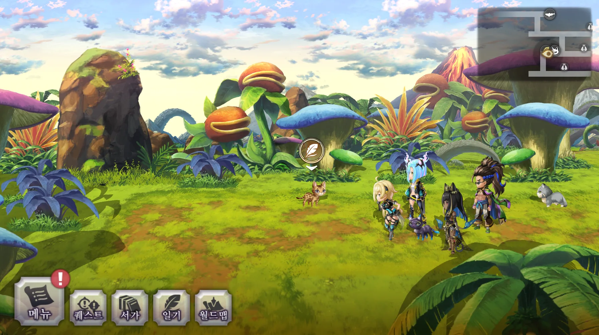

🐱 고양이 일기 · 냥도장 가이드
› 고대 › 미그레이나
졸 평원
어나더에덴 고양이 일기(냥도장) 위치
고대
미그레이나
냥도장 대사
버섯이고 도마뱀이고 할 것 없이 뭐든지 거대한 들판이로구냥....!


제보: 덴기스
전체 74곳 가이드에서 보기 →
← 나다라 화산 (분화구 앞)
물의 도시 아크툴 →
고대 · 미그레이나의 다른 냥도장
불의 마을 라틀
바슈 산악
나다라 화산 (분화구 앞)
졸 평원
물의 도시 아크툴
티렌 호수길
식인 늪
파르지팔 궁전
케루리 길
코린다 벌판
시간의 탑 (7층)
초원의 마을 사르파
차롤 초원
연옥계
별의 탑 (1층)